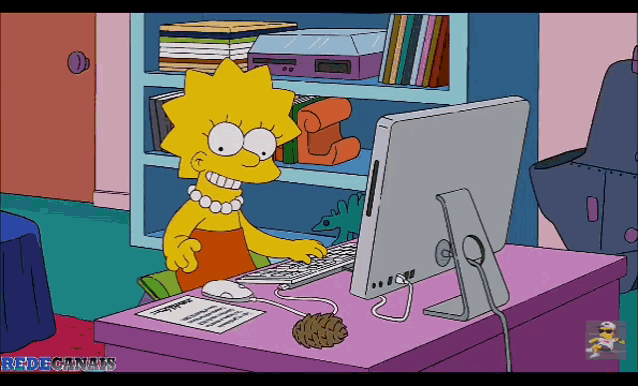
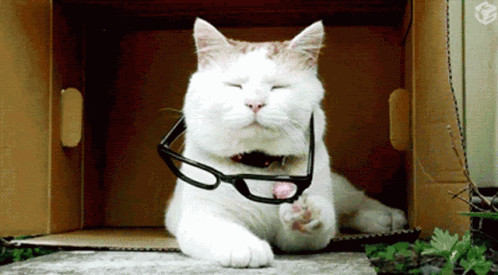

AS TDIC ESTÃO PRESENTES DE MANEIRA TÃO INTENSA NO NOSSO COTIDIANO QUE JÁ FAZEM PARTE DA NOSSA VIDA. IMAGINO QUE PARA VOCÊ NÃO TENHA SIDO MUITO DIFERENTE, MAS, PARA MIM, ESSA PROXIMIDADE ACENTUOU DURANTE A PANDEMIA.
É INEGAVEL O QUANTO AS TDIC CONTRIBUIRAM PARA O MEU PROCESSO FORMATIVO, SOBRETUDO, POR EU JÁ TER UMA CERTA TENDÊNCIA A USÁ-LAS. QUERO DIZER, ANTES DA PANDEMIA, EU JÁ UTILIZAVA COM BASTANTE FREQUÊNCIA. MAS, AGORA, DE ALGUMA MANEIRA, ME SINTO MEIO QUE APRISIONADO.
FICO O DIA TODO EM FRENTE A TELA DO COMPUTADOR E QUANDO ISSO NÃO ESTÁ ACONTECENDO, ESTOU EM FRENTE A TELA DO CELULAR. MESMO QUERENDO ROMPER UM POUCO ESSA DEPENDÊCIA, TENHO BASTANTE DIFICULDADE.

AS CONSEQUÊNCIAS SÃO AVASSALADORAS. DESDE O INICIO DA PANDEMIA PASSEI A TER PROBLEMAS DE VISÃO... ISSO PORQUE MINHA VISÃO ERA PERFEITA ANTES, O QUE ME DEIXA BASTANTE CHATEADO. OUTRA SITUAÇÃO QUE DESENCADEOU COM ESSA UTILIZAÇÃO EXACERBADA DAS TDIC FOI A ANSIEDADE. JÁ ERA ALGO QUE EU TINHA, MAS ULTIMAMENTE ESTÁ BEM MAIS DIFÍCIL DE LIDAR...

EU CRESCI EM UM CONTEXTO MAIS DISTANTE DAS TDIC E ISSO ME LEVA A REFLETIR SOBRE OS IMPACTOS DE SEU USO ACENTUADO PELAS NOVAS GERAÇÕES (CASO NÃO TENHA VISTO A PÁGINA SOBRE MIM, CLIQUE AQUI 👈. PARA VOLTAR, CLIQUE NA 🍌). MINHA SOBRINHA DE 5 ANOS, POR EXEMPLO, JÁ SABE USAR O CELULAR. SE DEIXAR, ELA FICA O DIA TODO CONECTADA. ESSA É A REALIDADE DE MUITAS CRIANÇAS. SERÁ QUE ESTAMOS PREPARADOS PARA DAR SUPORTE PARA ESSAS PESSOAS NO FUTUTURO, QUANDO ESTIVERMOS NA CONDIÇÃO DE SEUS PROFESSORES?